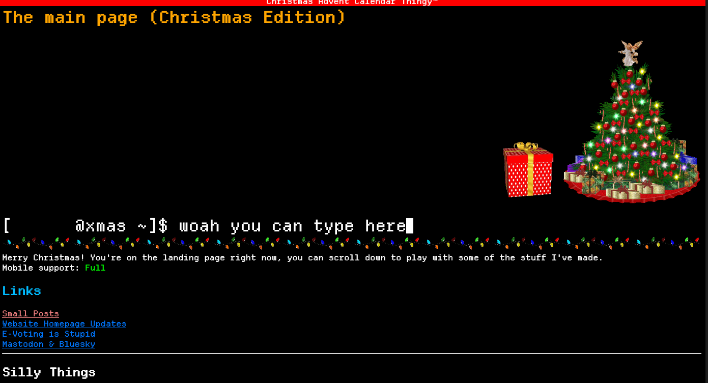

I already know how to code and have made websites before among other things. I use Linux (Fedora 41 + DWM) and code with Neovim normally. I started learning Python when I was 10 and now as a result all of my code has hints of things I bodged when I was 10 and have reused ever since. As a result I instinctively forget to use virtual environments, write the worst comments know to man and can't for the life of me use a web framework.

While I already know what I know now, there are always more things for me to learn. Obviously an archaic version of GameMaker will never in a million years help anyone, but I didn't actually know the target="_blank" part of the <a> tag existed for example. I usually am more motivated to do things when there's a deadline, which this class gives and forces me to code more. (Don't expect me to refrain from jamming CSS into websites for no reason!)